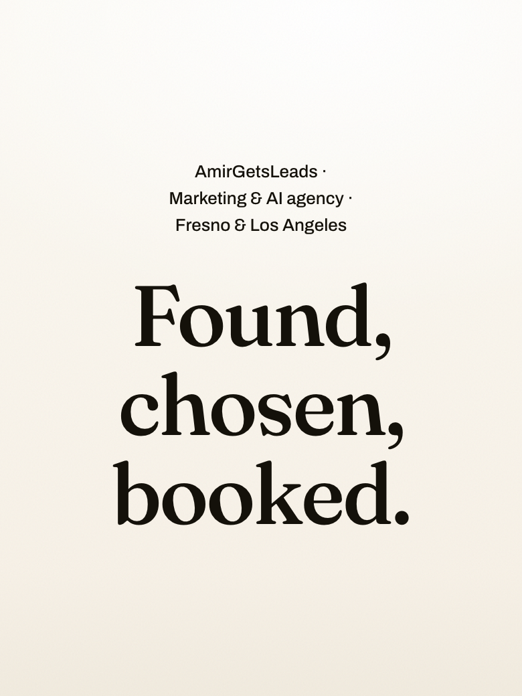
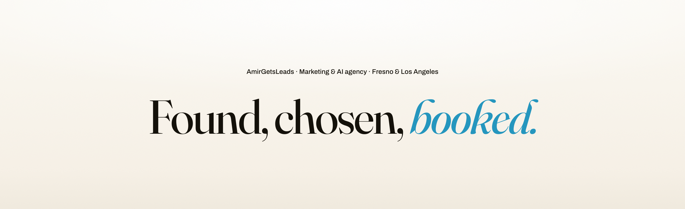
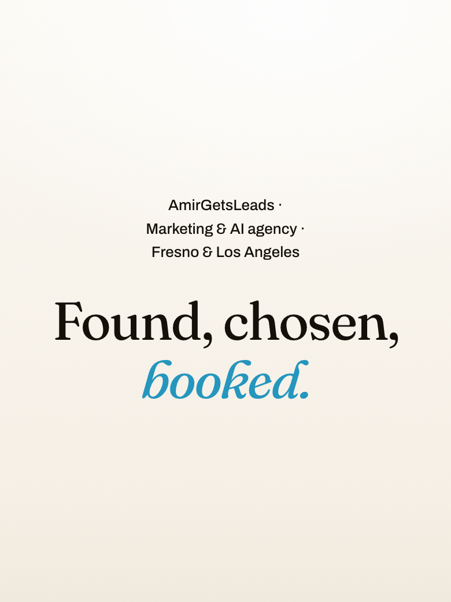
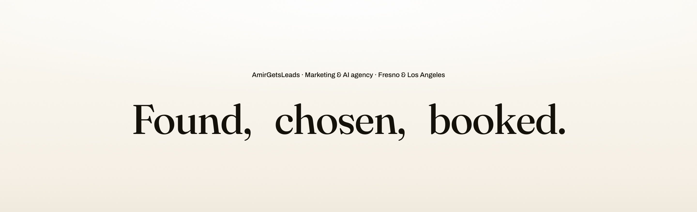
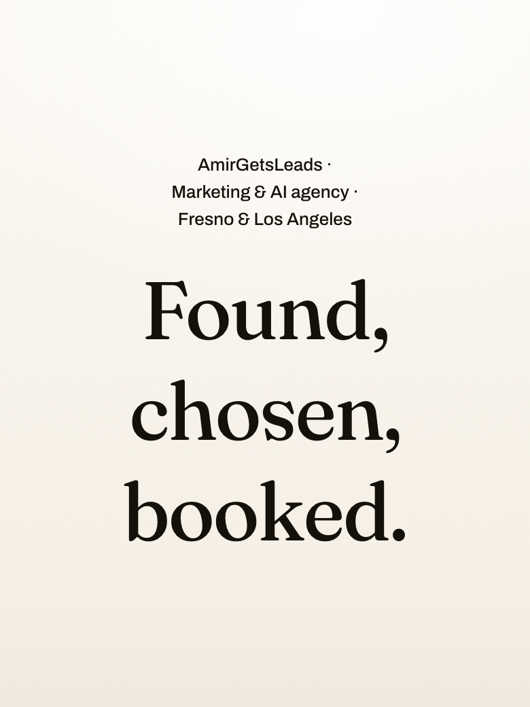
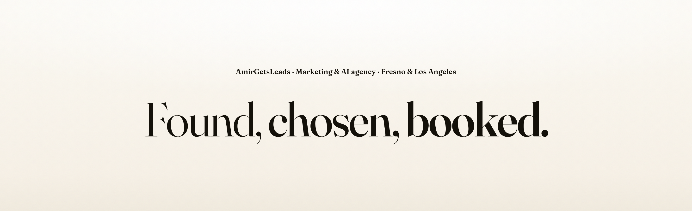
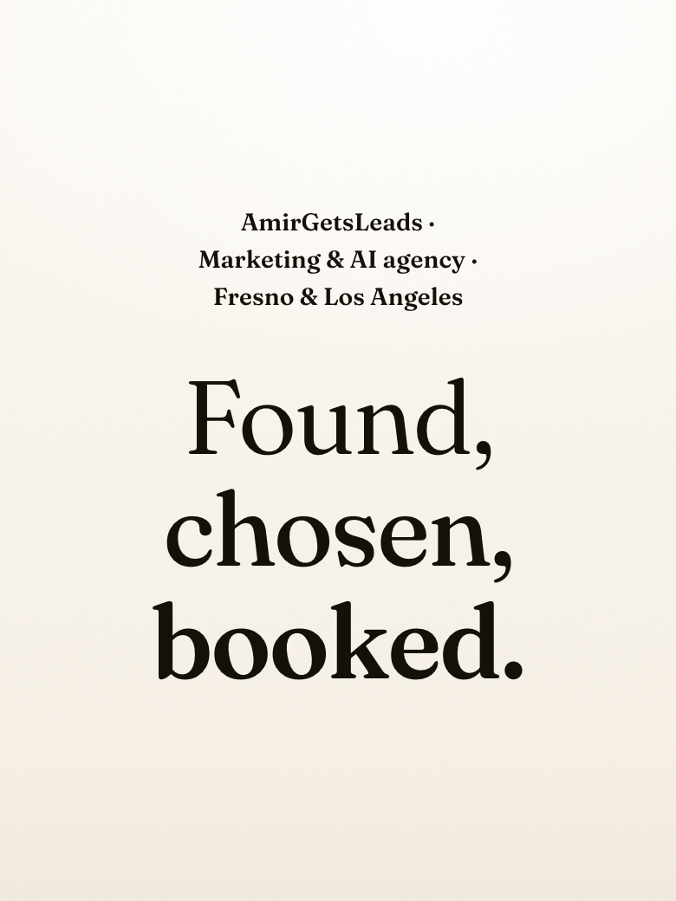
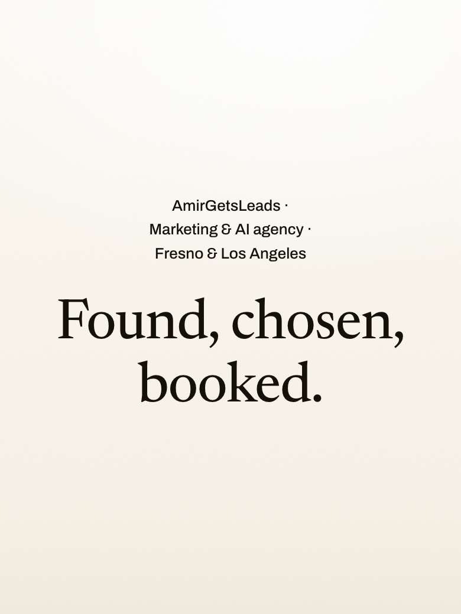
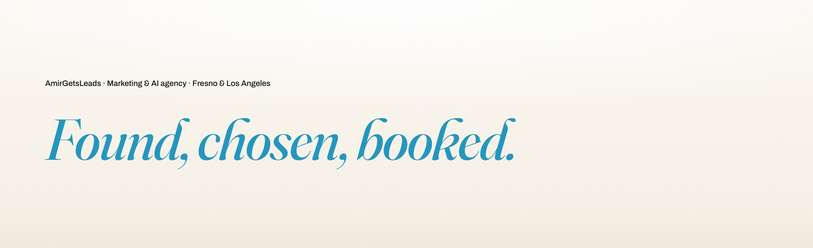
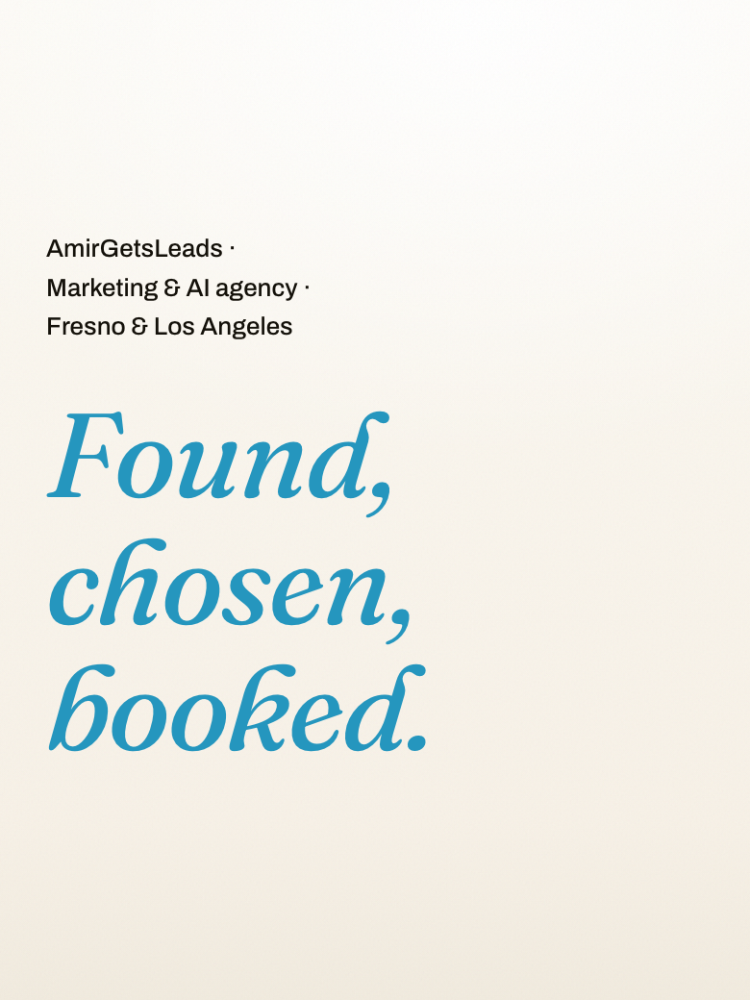

1 · The house signature — Fraunces 520, all ink

2 · The concierge — Fraunces 430 + blue italic 'booked.' (Astra's pick)


3 · Three measured beats — spaced as three units


4 · One family, two distances — weight climbs 360 / 460 / 580


5 · The editorial reservation — Newsreader, new font

6 · A note from the house — all italic, all blue, left aligned

